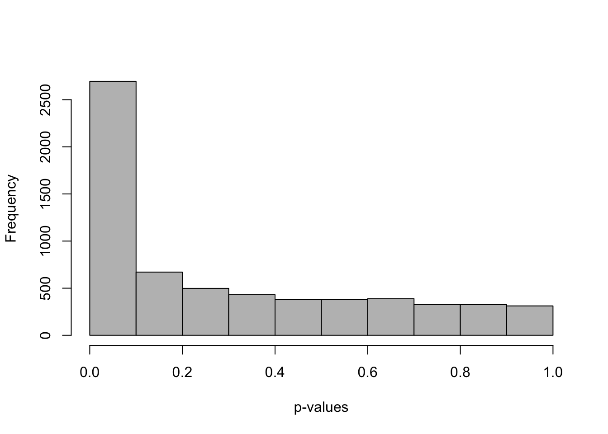
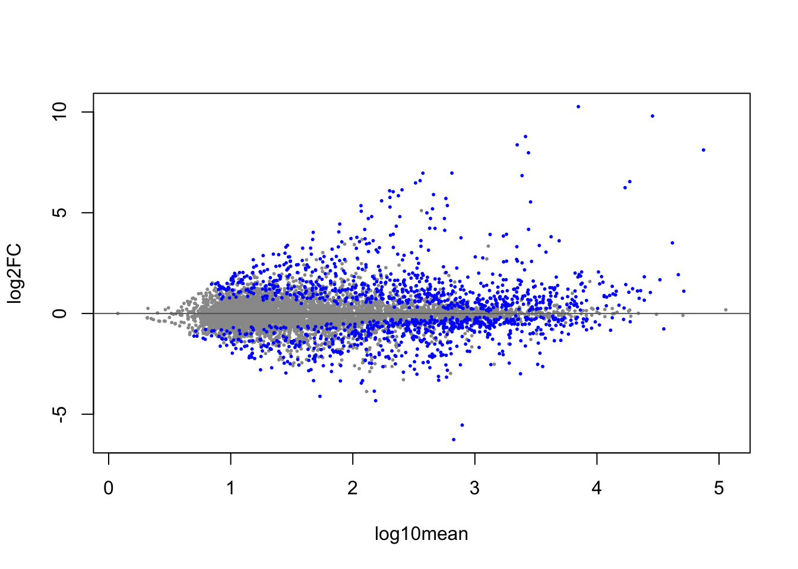
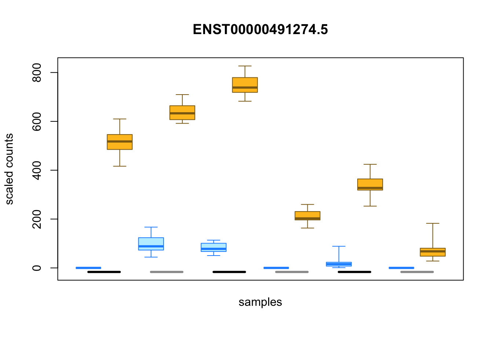

Chapter 3 Transcript expression
In the previous chapters, I showed importing transcript-level data with tximeta, summarizing the data to gene-level counts, and modeling the gene-level counts with DESeq2. Now I return to transcript-level data and demonstrate how we can perform statistical testing on transcripts, that is, across all the isoforms of all the genes. There are two important aspects to consider when performing transcript-level analysis:
- Uncertainty - Because the isoforms of a gene often have a considerable amount of sequence similarity resulting from shared exons, and because short read RNA-seq protocols involve generating fragments that do not span the entire transcript, there can be considerable uncertainty in assigning a given fragment to a particular transcript (see next chapter for a discussion of long read protocols). The uncertainty is not constant across the transcripts, and depends on many factors, some inherent to the gene model, such as the size of the alternative exons, and some inherent to the experiment, such as the sequencing depth, fragment length, read length, and technical biases producing non-uniform coverage.
- Isoform switching - We may perform testing for differential expression of each transcript (I will perform this analysis in this chapter), or we may also consider testing whether the usage of the isoforms within a gene changes across condition. The latter question is often termed differential transcript usage (DTU), and can be related to differential transcript expression (DTE), but they are not identical questions. For example, if all of the isoforms of a gene increase in their expression across condition with equal fold change, this is an example of differential gene expression (DGE) and DTE, but not DTU, as the proportions of the individual isoforms did not change.
Regarding isoform switching, one reference which explores Bioconductor packages that can be used to detect DTU is the rnaseqDTU Bioconductor workflow (Love, Soneson, and Patro 2018). This workflow demonstrates optimal filtering techniques (Soneson et al. 2016), how the methods DEXSeq (Anders, Reyes, and Huber 2012) and DRIMSeq (Nowicka and Robinson 2016) can be applied to estimated transcript counts, and how stageR (Van den Berge et al. 2017) can be utilized to detect which genes and which isoforms contain evidence of DTU while controlling overall error rates.
I will first introduce the experimental data, and then discuss various approaches used to analyze transcript-level data. I will load some processed RNA-seq data from an experiment by Alasoo et al. (2018), a subset of which is available in the macrophage Biconductor package. The experiment involved measuring transcription in macrophage cell lines from a number of human donors, both untreated, as well as treated with IFNg, Salmonella, and IFNg combined with Salmonella. Here I will focus on the samples that were untreated and treated with IFNg. As each cell line was from a human donor, I will also control for a baseline donor effect when comparing across treatment.
The macrophage dataset has paired samples from 6 of the donors (all female), and has been quantified using Salmon. One unique aspect of Salmon is that it allows for GC bias correction at the fragment level during quantification, which is critical for reliable identification of the correct expressed isoform in experiments that have non-uniform coverage along the transcripts (Love, Hogenesch, and Irizarry 2016; Patro et al. 2017).
Here I will perform differential transcript expression (DTE) analysis. A key aspect, compared to gene-level analysis, is that there is much more uncertainty in the assignments of fragments to transcripts. A number of statistical methods have been proposed to take this measurement uncertainty into account when performing downstream testing, including BitSeq (Glaus, Honkela, and Rattray 2012), mmdiff (Turro, Astle, and Tavaré 2013), IsoDE (Al Seesi et al. 2014), and Sleuth (Pimentel et al. 2017), the latter which leverages bootstrap quantification estimates from the kallisto (Bray et al. 2016) quantification method. These methods incorporate measurement uncertainty into parametric models for differential expression where biological variability is also modeled. The exception is IsoDE which compares bootstrap distributions of transcript expression for two samples at a time.
Here, I will use a nonparametric method that takes into account both inferential uncertainty of fragment assignments, as well as biological variability across samples, called Swish (Zhu et al. 2019), which is available in the fishpond Bioconductor package. Swish stands for “SAMseq With Inferential Samples Helps”, as it is based on the existing statistical method for differential gene expression, SAMseq (Li and Tibshirani 2011). The key idea is to make use of nonparametric testing methods such as the Mann-Whitney Wilcoxon statistic, which operate only on the ranks of the data across samples. The original SAMseq method performed resampling of the counts in order to account for sequencing depth differences. Here, Swish will make use of multiple values in each cell of the count matrix that were computed by the Salmon software, using a technique called Gibbs sampling. For more details on the Gibbs sampling procedure, consult the publication of Salmon (Patro et al. 2017) and mmseq (Turro et al. 2011). Finally, the false discovery rate of the test statistics averaged over the multiple versions (or “inferential replicates”) of the counts matrix is computed via a permutation technique (Storey and Tibshirani 2003).
I begin by locating the files in the macrophage package. As before,
this step is not useful for a typical RNA-seq workflow, as the data
will not be contained in an R package, but contained in some directory
on a server or compute cluster. In lieu of the system.file command
below, you should just specify the dir variable to be a path to the
files, e.g. /path/to/data/dir.
## [1] "coldata.csv"
## [2] "errs"
## [3] "gencode.v29_salmon_0.12.0"
## [4] "gencode.v29.annotation.gtf.gz"
## [5] "PRJEB18997.txt"
## [6] "quants"
## [7] "supp_table_1.csv"
## [8] "supp_table_7.csv"I then read in the sample table, and use dplyr to select certain columns, convert columns into factors, and add a new column pointing to the quantification files.
## Parsed with column specification:
## cols(
## names = col_character(),
## sample_id = col_character(),
## line_id = col_character(),
## replicate = col_double(),
## condition_name = col_character(),
## macrophage_harvest = col_character(),
## salmonella_date = col_character(),
## ng_ul_mean = col_double(),
## rna_extraction = col_character(),
## rna_submit = col_character(),
## library_pool = col_character(),
## chemistry = col_character(),
## rna_auto = col_double()
## )lvls <- c("naive","IFNg","SL1344","IFNg_SL1344")
coldata <- coldata %>%
dplyr::select(names, id=sample_id, line=line_id,
condition=condition_name) %>%
mutate(line=factor(line),
condition=factor(condition, levels=lvls),
files=file.path(dir, "quants", names, "quant.sf.gz"))I will only consider for this demonstration the untreated and IFNg treated samples:
coldata <- coldata %>% filter(condition %in% c("naive","IFNg"))
coldata$condition <- droplevels(coldata$condition)The coldata sample table now looks like:
## # A tibble: 6 x 5
## names id line condition files
## <chr> <chr> <fct> <fct> <chr>
## 1 SAMEA103… diku_A diku… naive /Library/Frameworks/R.framewo…
## 2 SAMEA103… diku_B diku… IFNg /Library/Frameworks/R.framewo…
## 3 SAMEA103… eiwy_A eiwy… naive /Library/Frameworks/R.framewo…
## 4 SAMEA103… eiwy_B eiwy… IFNg /Library/Frameworks/R.framewo…
## 5 SAMEA103… fikt_A fikt… naive /Library/Frameworks/R.framewo…
## 6 SAMEA103… fikt_B fikt… IFNg /Library/Frameworks/R.framewo…Test that all the files exist as I specified:
## [1] TRUEAs before, I use tximeta to read in the quantification data. This
time I do not set dropInfReps=TRUE, as I will need the inferential
replicates created by Salmon to perform DTE with Swish. The
inferential replicates allows the analysis to take into account the
uncertainty of fragment assignment to transcripts.
library(tximeta)
suppressPackageStartupMessages(library(SummarizedExperiment))
y <- tximeta(coldata)## importing quantifications## reading in files with read_tsv## 1 2 3 4 5 6 7 8 9 10 11 12
## found matching linked transcriptome:
## [ GENCODE - Homo sapiens - release 29 ]
## loading existing TxDb created: 2019-02-11 14:22:51
## loading existing transcript ranges created: 2019-05-31 20:37:15
## fetching genome info for GENCODEFor speed of the demonstration, I subset to only the transcripts on chromosome 1 (this would not be recommended for a typical analysis).
I load the fishpond package, which contains the methods for running
Swish. There are three basic steps: scaling of the inferential
replicates to make them comparable despite different sequencing depth,
filtering out lowly expressed transcripts, and the testing itself. The
scaling method by default uses the median ratio method of DESeq
(Anders and Huber 2010). The labelKeep function by default will keep those
transcripts with 3 or more samples with a count of 10 or higher. For
scRNA-seq with UMI de-duplication, it is recommended to lower the
minimal count to a lower value such as 3. The minimal number of
samples can be increased for experiments with many samples.
Because the method makes use of permutations, it is required to set a
seed for computational reproducibility. I specify to test across the
condition variable, while controlling for a pairing variable
line. The line variable indicates which donor the cell line came
from.
After running swish, all of the results are stored in the metadata
columns (mcols) of the object y. I look to see how many
transcripts have a small q-value (analogous to an adjusted p-value,
this should provide a set with a nominal FDR control).
## [1] "tx_id" "gene_id" "tx_name" "log10mean" "keep"
## [6] "stat" "log2FC" "pvalue" "locfdr" "qvalue"##
## FALSE TRUE
## 5081 1329One important aspect in testing across many features, in particular where the uncertainty level is so heterogeneous, is to consider if the p-value distribution is roughly uniform, with the exception of the rejected tests. Here Swish provides a roughly uniform distribution, with a spike on the left side representing the rejections of the null hypothesis.

As with DESeq2 I can make an MA-plot, with the differential transcripts highlighted in blue (here at 5% FDR).

I can also examine individual transcripts with evidence of differential expression. As each sample is represented by a distribution of possible estimated counts from Salmon, Swish uses boxplots to represent the differences in expression across samples:
idx <- with(mcols(y), which(pvalue < .05 & log2FC > 4))
plotInfReps(y, idx[1], x="condition", cov="line", xaxis=FALSE)
This chapter gives a basic introduction to DTE using nonparametric testing with the Swish method. For more details on transcript-level analysis, it is recommended to consult the fishpond Bioconductor package vignette, or the rnaseqDTU workflow on Bioconductor (Love, Soneson, and Patro 2018).
References
Alasoo, K, J Rodrigues, S Mukhopadhyay, AJ Knights, AL Mann, K Kundu, HIPSCI-Consortium, C Hale, Dougan G, and DJ Gaffney. 2018. “Shared genetic effects on chromatin and gene expression indicate a role for enhancer priming in immune response.” Nature Genetics 50: 424–31. https://doi.org/10.1038/s41588-018-0046-7.
Al Seesi, Sahar, Yvette Temate-Tiagueu, Alex Zelikovsky, and Ion I Măndoiu. 2014. “Bootstrap-based differential gene expression analysis for RNA-Seq data with and without replicates.” BMC Genomics 15 (Suppl 8). https://doi.org/10.1186/1471-2164-15-S8-S2.
Anders, Simon, and Wolfgang Huber. 2010. “Differential Expression Analysis for Sequence Count Data.” Genome Biology 11: R106. https://doi.org/10.1186/gb-2010-11-10-r106.
Anders, Simon, Alejandro Reyes, and Wolfgang Huber. 2012. “Detecting differential usage of exons from RNA-seq data.” Genome Research 22 (10): 2008–17. https://doi.org/10.1101/gr.133744.111.
Bray, Nicolas L, Harold Pimentel, Páll Melsted, and Lior Pachter. 2016. “Near-optimal probabilistic RNA-seq quantification.” Nature Biotechnology 34 (5): 525. https://doi.org/10.1038/nbt.3519.
Glaus, Peter, Antti Honkela, and Magnus Rattray. 2012. “Identifying differentially expressed transcripts from RNA-seq data with biological variation.” Bioinformatics 28 (13). https://doi.org/10.1093/bioinformatics/bts260.
Li, J, and R Tibshirani. 2011. “Finding consistent patterns: A nonparametric approach for identifying differential expression in RNA-Seq data.” Statistical Methods in Medical Research 22 (5): 519–36. https://doi.org/10.1177/0962280211428386.
Love, Michael I., John B. Hogenesch, and Rafael A. Irizarry. 2016. “Modeling of Rna-Seq Fragment Sequence Bias Reduces Systematic Errors in Transcript Abundance Estimation.” Nature Biotechnology 34 (12): 1287–91. https://doi.org/10.1038/nbt.3682.
Love, MI, C Soneson, and R Patro. 2018. “Swimming Downstream: Statistical Analysis of Differential Transcript Usage Following Salmon Quantification.” F1000Research 7 (952). https://doi.org/10.12688/f1000research.15398.
Nowicka, M, and MD Robinson. 2016. “DRIMSeq: a Dirichlet-multinomial framework for multivariate count outcomes in genomics.” F1000Research 5 (1356). https://doi.org/10.12688/f1000research.8900.
Patro, R, G Duggal, MI Love, RA Irizarry, and C Kingsford. 2017. “Salmon Provides Fast and Bias-Aware Quantification of Transcript Expression.” Nature Methods 14: 417–19. https://doi.org/10.1038/nmeth.4197.
Pimentel, Harold, Nicolas L Bray, Suzette Puente, Pá Melsted, and Lior Pachter. 2017. “Differential analysis of RNA-seq incorporating quantification uncertainty.” Nature Methods 14 (7): 687–90. https://doi.org/10.1038/nmeth.4324.
Soneson, Charlotte, Katarina L. Matthes, Malgorzata Nowicka, Charity W. Law, and Mark D. Robinson. 2016. “Isoform Prefiltering Improves Performance of Count-Based Methods for Analysis of Differential Transcript Usage.” Genome Biology 17 (1): 12. https://doi.org/10.1186/s13059-015-0862-3.
Storey, JD, and R Tibshirani. 2003. “ Statistical significance for genome-wide experiments.” Proceedings of the National Academy of Sciences 100 (16): 9440–5. https://doi.org/10.1073/pnas.1530509100.
Turro, Ernest, William J. Astle, and Simon Tavaré. 2013. “Flexible analysis of RNA-seq data using mixed effects models.” Bioinformatics 30 (2): 180–88. https://doi.org/10.1093/bioinformatics/btt624.
Turro, Ernest, Shu-Yi Su, Ângela Gonçalves, Lachlan JM Coin, Sylvia Richardson, and Alex Lewin. 2011. “Haplotype and isoform specific expression estimation using multi-mapping RNA-seq reads.” Genome Biology 12 (2): R13. https://doi.org/10.1186/gb-2011-12-2-r13.
Van den Berge, Koen, Charlotte Soneson, Mark D Robinson, and Lieven Clement. 2017. “stageR: a general stage-wise method for controlling the gene-level false discovery rate in differential expression and differential transcript usage.” Genome Biology 18 (1): 151. https://doi.org/10.1186/s13059-017-1277-0.
Zhu, A, A Srivastava, JG Ibrahim, R Patro, and MI Love. 2019. “Nonparametric expression analysis using inferential replicate counts.” Nucleic Acids Research. https://doi.org/10.1093/nar/gkz622.